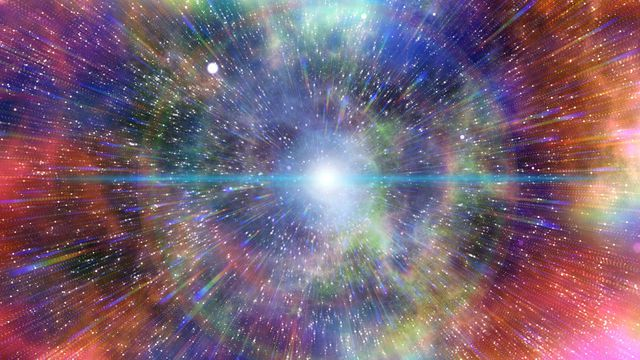

O BIG BANG
Elaborada no início do século XX, a teoria do Big Bang descreve a origem do nosso Universo a partir de uma grande explosão que ocorreu há aproximadamente 14 bilhões de anos."A teoria do Big Bang descreve a origem do Universo a partir da expansão violenta de uma partícula muito densa e extremamente quente que teve início há 13,8 bilhões de anos, aproximadamente. Essa expansão não cessou, o que pode ser observado por meio do afastamento das galáxias. Essa é a teoria mais aceita pela comunidade científica para o surgimento do Universo, tendo sido elaborada na década de 1920 e aperfeiçoada à medida que os estudos sobre o cosmos foram se tornando mais complexos. Existem elementos que atestam a teoria do Big Bang, mas os trabalhos que buscam por novos indícios da sua ocorrência continuam.
O que diz a teoria do Big Bang?
A teoria do Big Bang é a explicação mais aceita para a origem do nosso Universo. De acordo com essa hipótese, todos os elementos conhecidos e desconhecidos que estão presentes no espaço vieram de um único ponto de altíssima temperatura e densidade infinita que era chamado então de “átomo primordial”. Há aproximadamente 13,8 bilhões de anos, esse único ponto começou a se inflar, o que decorreu por uma pequena fração de tempo, e “explodiu” logo na sequência, isto é, começou o seu processo de expansão, que continua até o presente.
História da teoria do Big Bang
A teoria do Big Bang foi sugerida pelo físico belga George Lemaître (1894-1966) em um artigo, publicado no ano de 1927, que discorre a respeito de como o Universo pode ter se originado a partir da expansão de um único átomo (o chamado átomo primordial). As ideias de Lemaître receberam suporte por meio dos estudos realizados por Edwin Hubble (1889-1953) a respeito do comportamento das galáxias e como elas se movimentam no espaço, afastando-se umas das outras a uma velocidade acelerada. A teoria da relatividade geral de Albert Einstein (1879-1955) foi também fundamental para a compreensão de como a força gravitacional age no espaço-tempo, servindo como base teórica para as observações de Hubble e para a noção de como funcionam objetos como os buracos negros, que possuem no seu núcleo um ponto de densidade infinita. O termo Big Bang (“grande explosão”) teria sido cunhado no final da década de 1940, em uma análise crítica à teoria feita pelo astrônomo britânico Fred Hoyle (1915-2001). No ano de 1965, a radiação cósmica de fundo em micro-ondas, cuja existência havia sido prevista durante os anos de 1940, acabou sendo de fato encontrada por pesquisadores dos Laboratórios Bell, pertencentes à empresa fundada por Graham Bell, nos Estados Unidos. Atualmente, diversas pesquisas e missões são desenvolvidas por laboratórios internacionais e agências espaciais, como a Nasa, voltadas a atestar a veracidade da teoria do Big Bang, que continua sendo a mais aceita entre os pesquisadores para explicar a origem do Universo.
Aspectos principais da teoria do Big Bang
Após o surgimento da teoria de Lemaître, as observações astronômicas de Edwin Hubble (1889-1953) mostraram que as galáxias afastam-se umas das outras em todas as direções do espaço e em altas velocidades. Essa evidência, juntamente à descoberta acidental da radiação cósmica de fundo, em 1965, pelos físicos Arno Penzias (1933) e Robert Wilson (1936), reforçou a aceitação da teoria do átomo primordial. O afastamento das galáxias foi considerado uma sugestão direta de um universo em expansão, enquanto a detecção da radiação de fundo confirmou as previsões teóricas do modelo de Gamov, sugerindo que o Universo teve um início, no qual os núcleos atômicos foram criados em um dado momento pelo processo de nucleossíntese. Muitos pesquisadores investiram nessa teoria, que mais tarde foi chamada de teoria do Big Bang. Confira a seguir uma linha do tempo com as principais etapas da formação do universo de acordo com essa teoria.
Origem dos Planetas
Conforme a teoria, no instante de uma minúscula fração de segundo após o Big Bang, o Universo quente e denso se expandiu com rapidez incompreensível para os padrões humanos, dando origem ao escopo astronômico. A expansão continuou de maneira mais lenta nos anos que se seguiram. À medida que o Universo esfriava, houve a combinação entre os elementos. Antes desse evento, chamado “recombinação”, o Universo era opaco, mas tornou-se transparente para a radiação, também chamada de radiação cósmica de fundo. Com o passar do tempo, a matéria esfriou e os mais diversos tipos de átomos começaram a se formar e esses, eventualmente, se condensaram e formaram os corpos celestes do Universo atual (estrelas, planetas, satélites, etc.).
